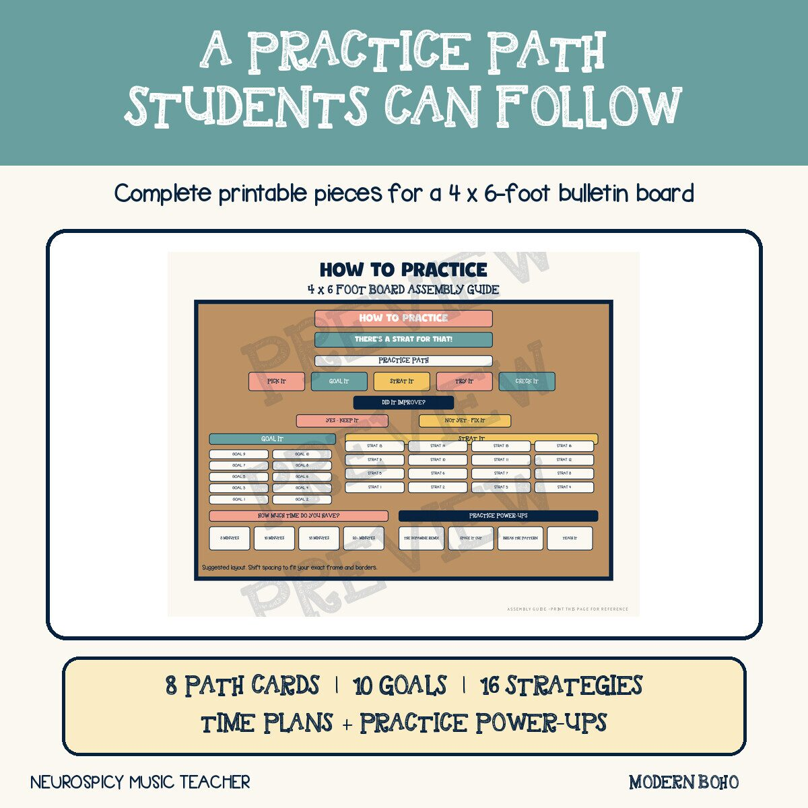
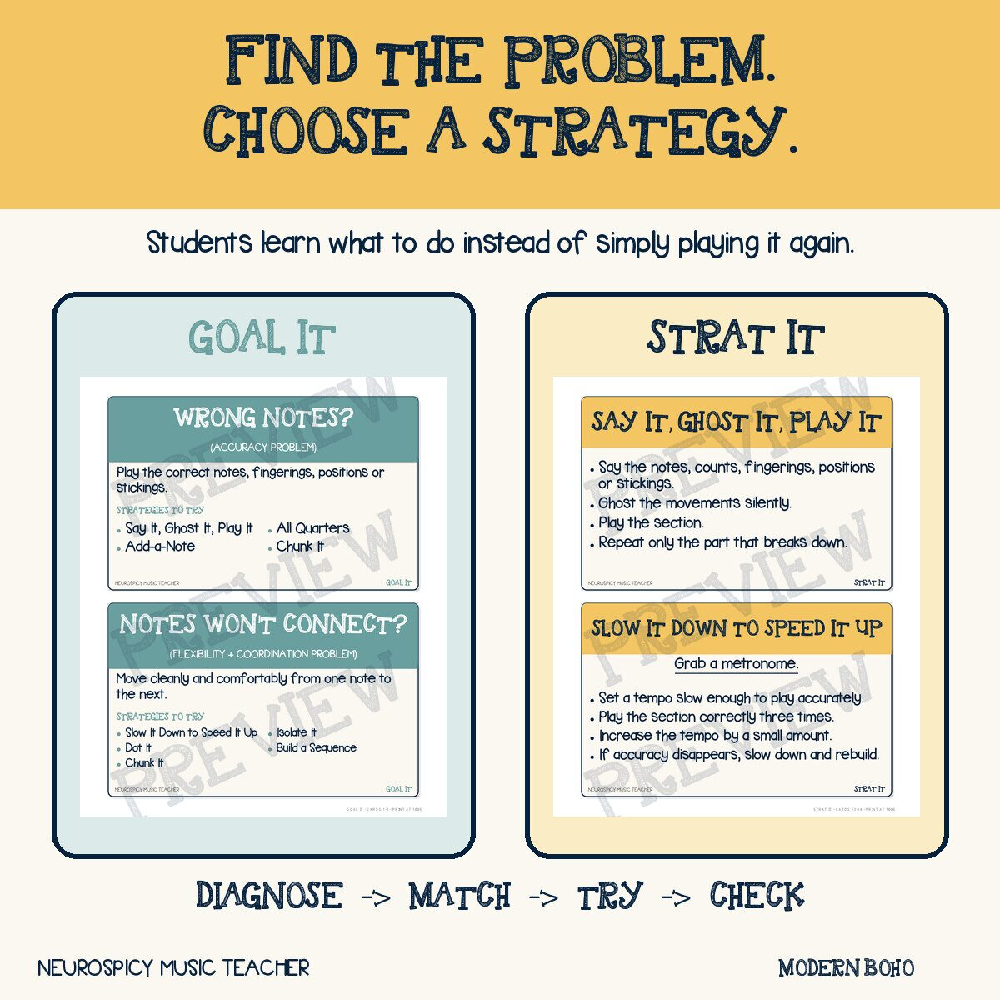
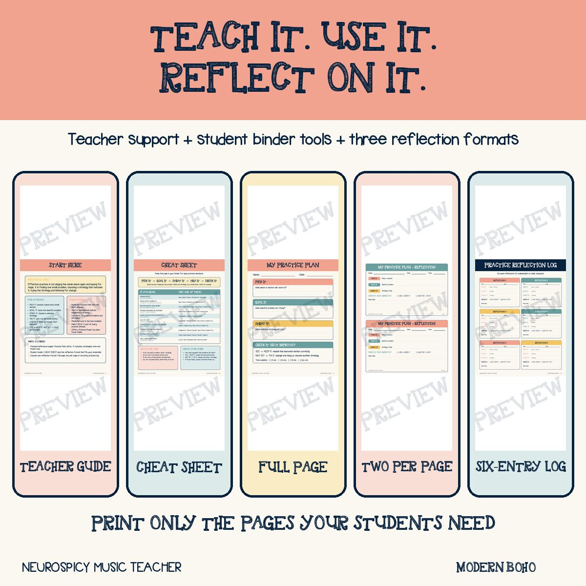

“Go home and practise.”
We say it as though we have given an instruction. Most of the time, we have only named a location and expressed a hope.
An experienced musician hears a whole series of steps inside practise this passage: find the exact spot, listen for the problem, decide what is causing it, choose a strategy, work on a small section, monitor the result and adjust. We do not always realize how much knowledge we have packed into those three words.
A beginning musician may hear something very different: play from the top, make the same mistake, start again and hope for magic. A student who struggles with task initiation, working memory, attention regulation, motor planning or fear of failure has even more invisible work to navigate before the instrument comes out of the case.
When the result is ineffective practice, it is easy to blame motivation. Sometimes, though, it is not the kid. It is the system.
When I was younger, I would practise the piano for hours—sometimes two or three hours a day. I was committed. I was putting in the time. Looking back, though, so much of that time was wasted because I had no idea how to practise effectively. I played from the beginning to the end, then went back to the beginning and did it again. If something did not work, my main strategy was apparently to keep playing and hope it sorted itself out somewhere around the sixth run-through.
I did not know how to isolate a problem, break a passage into smaller pieces or decide whether I was dealing with notes, rhythm, coordination or something else. I knew how to be persistent, but I had not been taught how to make that persistence useful. I do not want my students spending two or three hours learning the same lesson the slow way when we can teach them what effective practice actually looks like.
My professional-learning work has focused on removing barriers, normalizing failure and intentionally structuring the first years of band. The How to Practice system grew from the same question: what happens when we stop treating ineffective practice as a character problem and teach the missing process instead?
Practice is a skill—not a compliance test
Students do not automatically know how to practise just because they know practice is important. Telling them to work harder, play it again or spend thirty minutes with their instrument does not teach them what to do when something goes wrong.
Research on musicians’ practice supports this distinction. In a study of advanced pianists, Robert Duke, Amy Simmons and Carla Davis Cash found that the quality of practice behaviour—not simply the time spent or the number of repetitions—was associated with better next-day retention. The more successful practisers located errors precisely, changed what they were doing and repeated the corrected version until it became stable (Duke, Simmons and Cash, 2009).
In band, “play it five more times” can easily become five repetitions of the same mistake. Repetition only helps when students know what they are listening for and what they intend to change.
Useful practice follows a problem-solving cycle:
- Notice something specific.
- Choose a strategy that fits.
- Try it on a manageable section.
- Listen for change.
- Keep what worked or change the plan.
This fits with the broader idea of deliberate practice: improvement comes from focused work designed to address a specific weakness, with feedback and opportunities to refine the response—not from repetition alone (Ericsson, Krampe and Tesch-Römer, 1993).
Why I consider this neuroaffirming
Practising independently asks students to use a surprising number of executive-function skills. They have to begin without the momentum of rehearsal, hold a goal in mind, estimate time, ignore distractions, organize a sequence of steps, monitor their own playing, manage frustration and decide what to do next.
These skills develop through support and practice (Center on the Developing Child at Harvard University, 2014). If the entire process lives in the teacher’s head, students are left to guess—and honestly, that is not limited to our neurodiverse students. It is the majority of them. Most beginning musicians do not yet have the experience to infer a practice process they have never been taught.
The How to Practice system puts the process where students can see it. The sequence does not have to be held in working memory. Common musical problems have names. Strategies are visible and available before frustration takes over. Time expectations can be adjusted without abandoning the goal, and feedback becomes information students can act on rather than a judgment about whether they are “good” at music.
It also supports me as the teacher. By naming these problems and modelling the matching strategies in class, I have created a clear, concise guide for myself. I do not have to invent a response while I am conducting, listening across the ensemble, watching thirty students and trying to remember the seventeen other things that need my attention. I can identify the type of problem, choose a strategy, model it and give students language they will recognize the next time it happens.
Having the guide beside me reduces my cognitive load and makes my teaching more consistent. The support does not disappear when I am tired, overstimulated or trying to solve several problems at once. Universal design is not only for our students. Teachers also have working-memory limits, fluctuating attention and days when our brains are carrying far too many open tabs. A system that makes the next step easier to find helps everyone in the room—including me.
None of this requires a diagnosis, and none of it changes the musical standard. It creates a clearer route toward that standard.
This approach also connects with Universal Design for Learning. CAST describes learner agency as purposeful and reflective, resourceful, strategic and action-oriented. Its guidelines also emphasize choice and autonomy in engagement (CAST UDL Guidelines). Students build that agency when they can choose an appropriate strategy, test it and evaluate the result.
The Practice Path
The system uses five steps.
PICK IT
Choose the piece and then choose a small section—not the entire page and not every problem at once. The section should be small enough that the student can actually change something.
GOAL IT
Name one specific problem. “Get better” is not a usable goal. “The notes do not connect cleanly between measures 17 and 18” gives the student somewhere to begin.
STRAT IT
Choose a strategy that matches the problem. Students should not have to invent a solution from nothing while they are already frustrated.
TRY IT
Use the strategy on the chosen section. This attempt is an experiment, not a final performance.
CHECK IT
Listen carefully or record the attempt. If it improved, KEEP IT. If it did not improve yet, FIX IT and return to STRAT IT.
The language is short and intentionally repetitive. A student can point to their current step, and a teacher can ask, “Where are you on the path?” without immediately taking over the problem.
Mistakes are data. Strategy is the response.

Diagnose before prescribing
One of the most useful changes we can make is to stop using “wrong” as though it were a diagnosis.
A student may play wrong notes because they do not know the fingering. The fingerings may be correct but the notes still will not connect. A rhythm may be decoded accurately but rush when the pitches return because the pulse is unstable. A passage may work from the beginning of the piece but fall apart when the student has to begin in the middle.
Each of those problems requires a different response. The GOAL IT categories help students name what they hear and feel:
| What the student notices | Working diagnosis |
|---|---|
| Wrong notes? | Accuracy problem |
| Notes will not connect? | Flexibility and coordination problem |
| Rhythm does not make sense? | Rhythm-reading problem |
| Rushing, dragging or stopping? | Pulse and fluency problem |
| Sound unclear or inconsistent? | Tone problem |
| Out of tune? | Intonation problem |
| Articulations unclear or uneven? | Articulation problem |
| Dynamics or phrasing missing? | Expression problem |
| Playing feels awkward? | Setup and coordination problem |
| Only works sometimes? | Consistency problem |
These are not medical diagnoses. They are practical musical starting points that move a student away from “I am bad at this” and toward “I know what kind of problem I am trying to solve.”
Self-efficacy—the belief that we can organize and carry out the actions needed for a task—has been found to be an important predictor of achievement in young musicians’ performance examinations (McPherson and McCormick, 2006). Confidence is much more useful when it comes with a concrete next step.

Give students a strategy vocabulary
“Try again” is not a strategy unless something changes between the first attempt and the second.
Students need a bank of moves they recognize and can use without waiting for the teacher. Mine includes Chunk It, Clap & Count, Rhythm Only, Add-a-Note, All Quarters, Isolate It, Loop It, Tone Builder, Record Yourself and Start Somewhere Else.
Two strategies show how specific the instructions need to be.
Say It, Ghost It, Play It
- Say the notes, counts, fingerings, positions or stickings.
- Ghost the movements silently.
- Play the section.
- Repeat only the part that breaks down.
This separates knowing the sequence from producing the sound. It works for winds and percussion without pretending every physical problem is a fingering problem.
Slow It Down to Speed It Up
- Grab a metronome.
- Set a tempo slow enough to play accurately.
- Play the section correctly three times in a row.
- When all three attempts are correct, increase the tempo by a small amount.
- If accuracy disappears, slow it back down and rebuild.
This is the Rule of Three: if you can play it correctly three times in a row, you are ready to speed it up. One lucky attempt is encouraging, but it is not secure yet.
The strategy cards do not replace teacher expertise. They let students carry more of that expertise with them. Instead of solving the same problem for the same student every rehearsal, we can teach them to recognize the pattern and retrieve a tool that may help.
What are they supposed to do for thirty minutes?
Rigid time requirements can turn practice into an endurance test. A student with five available minutes may decide there is no point starting because the assignment says thirty. A student with thirty minutes may spend every one of them playing from the beginning without changing anything.
I would rather teach students to scale the work to the time they have:
- 5 minutes: Choose one piece, one problem, one small chunk and one strategy. Check the result before stopping.
- 10 minutes: Choose one or two pieces, work on one goal at a time and use one or two strategies. Check before moving on.
- 15 minutes: Choose two or three pieces, set one goal for each and alternate short, focused tasks.
- 20+ minutes: Work in focused blocks, reset between them and finish by recording or checking progress.
Five minutes will not always be enough, but five deliberate minutes are still real practice. A short plan that a student can begin is more useful than a longer plan built mostly out of guilt.
Supporting attention without the neuroscience theatre
When focus starts to fade, telling a student to “focus” does not give them a way to do it. Sometimes the most useful response is to change the task before they are completely checked out.
The Practice Power-Ups offer four options:
- The Dopamine Remix: Rotate between two or three pieces, goals or skills, then circle back. The name is memorable and student-friendly; it is not a claim that we can see or precisely control anyone’s dopamine.
- Space It Out: Leave the skill and retrieve it later that day or on another day. Research across verbal-learning studies shows that the spacing between learning episodes affects long-term retention (Cepeda et al., 2006). That research was not conducted in band rooms, but spacing is a useful general learning principle to test in musical practice.
- Break the Pattern: Change the order, starting point or length of the practice rounds. This interrupts autopilot and asks the student to retrieve the skill again.
- Teach It: Explain or demonstrate the skill to someone else. If the explanation gets stuck, that spot becomes the next practice goal.
These options treat attention as something students can support through structure rather than another opportunity to tell them they are not trying hard enough.
Teaching the system in rehearsal
A bulletin board does not teach anything by itself. Students need to use the process during rehearsal before we expect them to use it independently at home.
Choose a short passage and work through it together:
- Play it once.
- Ask, “What is the problem?”
- Agree on one diagnosis.
- Ask, “Which strategy matches?”
- Use that strategy for two or three minutes.
- Play or record the passage again.
- Ask, “What changed? What did you hear?”
At first, I model the thinking aloud: “The rhythm is correct when we clap it, but we rush when the pitches return. That sounds more like a pulse-and-fluency problem than a rhythm-reading problem. Let’s slow it down and loop two measures.”
As students become familiar with the language, they can take over more of those decisions. When they ask for help, I can ask what they noticed, which strategy they tried and what happened. I am still available to help; I am just not making myself the first and only strategy.
Growth-mindset language is useful here only if students have a credible way to improve. Large-scale research suggests that brief growth-mindset interventions have modest effects that depend partly on context (Yeager et al., 2019). Telling a student “You can do it” feels rather hollow if we have not also taught them what to try next.
Progress before perfection
Beginner band is noisy, physical and very public. A cracked note is not hidden on a worksheet; everyone hears it. If students learn that a bad sound means they should stop, avoiding the next attempt can feel safer than risking another one.
We can make that next attempt more manageable. Choose a section small enough to work with, treat the result as information, name what improved and decide what to try next. When the change works, repeat the corrected version so it has a chance to stick.
The Practice Path gives students language for that process. It helps move them from “I can’t do this” to “I know what the problem is, and I have something to try.”
Independent musicians are not born. We build them by teaching them what to do next.
Ready-to-Use Classroom Set
How to Practice: Modern Boho
The complete set includes the Practice Path, ten GOAL IT problem cards, sixteen strategy cards, time-based practice plans, Practice Power-Ups, student binder references and reflection pages for concert band winds and percussion.
You do not have to use every piece at once. A smaller system that is consistently taught will do more than a beautiful display nobody knows how to use.
View the Set on TPT
Sources and further reading
- CAST. Universal Design for Learning Guidelines.
- Center on the Developing Child at Harvard University. (2014). Enhancing and Practicing Executive Function Skills with Children from Infancy to Adolescence.
- Cepeda, N. J., Pashler, H., Vul, E., Wixted, J. T., and Rohrer, D. (2006). Distributed practice in verbal recall tasks: A review and quantitative synthesis. Psychological Bulletin, 132(3), 354–380.
- Duke, R. A., Simmons, A. L., and Cash, C. D. (2009). It’s not how much; it’s how: Characteristics of practice behavior and retention of performance skills. Journal of Research in Music Education, 56(4), 310–321.
- Ericsson, K. A., Krampe, R. T., and Tesch-Römer, C. (1993). The role of deliberate practice in the acquisition of expert performance. Psychological Review, 100(3), 363–406.
- McPherson, G. E., and McCormick, J. (2006). Self-efficacy and music performance. Psychology of Music, 34(3), 322–336.
- Yeager, D. S., et al. (2019). A national experiment reveals where a growth mindset improves achievement. Nature, 573, 364–369.